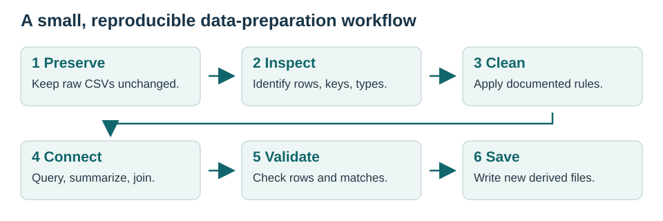
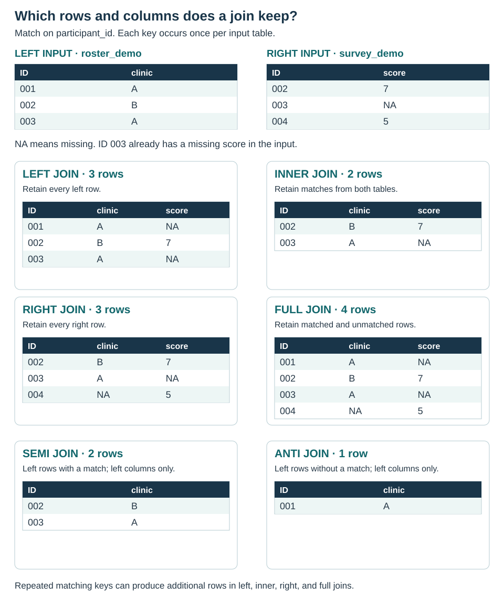
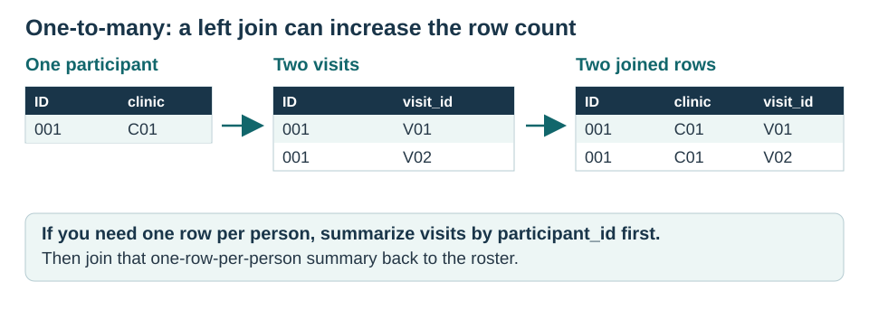

Show / hide code
options(width = 80)
# Keep SQL examples on the same database engine throughout the chapter.
options(sqldf.driver = "SQLite")
# Use sqldf's R-based string processing without a Tcl/Tk display dependency.
options(gsubfn.engine = "R")Imagine that you are preparing data for a community-health study. You receive three files: a participant roster, a clinic lookup table, and a study-visit extract. Before describing the participants, you need to clean the roster, connect the files, and confirm that the result still has the intended rows.
Data cleaning makes values interpretable and consistent. Data engineering organizes and connects data so those values can be used reliably. In this chapter, the final dataset will contain one row per enrolled participant, with clinic information and counts of records in the visit extract.
By the end of the walkthrough, you will be able to:
The files are small and entirely fictional. We will prepare data and produce descriptive summaries; these are not findings about a real population.

Open the book’s folder in Positron, or its .Rproj file in RStudio, to activate renv (see Chapter 2), then restore the recorded packages in your R console before rendering the book. The lockfile records R 4.6.2; install R and Quarto separately. This displayed command does not run during rendering:
dplyr transforms data; sqldf runs SQL queries on R data frames; knitr formats tables; and rmarkdown supports Quarto’s R execution. We use base R to read and write CSV files. Quarto itself is installed separately.
Open the book’s folder in Positron or the supplied .Rproj file, or start R in the folder containing _quarto.yml. During rendering, execute-dir: project makes paths resolve from that folder. For example, data/raw/participants.csv means a file inside this book, not a location elsewhere on your computer.
You will see a few conventions throughout:
| Notation | Meaning |
|---|---|
participants <- ... |
Save a result in an object named participants. |
dplyr::filter() |
Use filter() from the dplyr package. No library() call is needed. |
data |> function() |
Pass the data on the left into the next function. Read it as “then.” |
# ... |
A comment explaining the code or a decision. |
NA |
A missing value in R. It is different from zero or the text "NA". |
== |
Test equality. Use <- to assign an object. |
Run the R chunks from top to bottom. Later examples use objects created earlier.
Download or inspect the participant roster, clinic table, and visit extract. Their complete codebook describes the invented values and deliberate data problems.
A key is a column, or combination of columns, used to identify or connect records. Before joining anything, state what one row represents:
| File | Intended unit of observation | Key | Connection |
|---|---|---|---|
| Participants | One person | Participant ID | Each person belongs to one clinic. |
| Clinics | One clinic | clinic_id |
A clinic can have several participants. |
| Visits | One recorded visit | visit_id |
A participant can have several visits. |
For these small teaching files, import every column as text first. That preserves IDs such as "001" and lets us inspect the recorded values before converting numeric and date columns. With a larger file, you can instead specify a type for each column.
participants_raw <- read.csv(
"data/raw/participants.csv",
colClasses = "character",
na.strings = c("", "NA"),
check.names = FALSE
)
clinics <- read.csv(
"data/raw/clinics.csv",
colClasses = "character",
na.strings = c("", "NA")
)
visits_raw <- read.csv(
"data/raw/visits.csv",
colClasses = "character",
na.strings = c("", "NA")
)
head(participants_raw) Participant ID Clinic Age Smoking Enrollment Date Activity Minutes
1 001 C01 34 yes 2026-01-05 120
2 002 C01 52 No 2026-01-06 60
3 003 C02 29 n 2026-01-07 180
4 004 C02 999 Unknown 2026-01-08 90
5 005 C03 45 YES 2026-01-09 -9
6 006 C03 61 no 2026-01-10 0'data.frame': 13 obs. of 6 variables:
$ Participant ID : chr "001" "002" "003" "004" ...
$ Clinic : chr "C01" "C01" "C02" "C02" ...
$ Age : chr "34" "52" " 29 " "999" ...
$ Smoking : chr " yes " "No" "n" "Unknown" ...
$ Enrollment Date : chr "2026-01-05" "2026-01-06" "2026-01-07" "2026-01-08" ...
$ Activity Minutes: chr "120" "60" "180" "90" ...check.names = FALSE preserves the roster’s original column names, including spaces. str() shows their types. The age column is currently text (chr), which is intentional at this stage. Numeric-looking identifiers should stay text because arithmetic has no meaning for an ID.
| file | rows |
|---|---|
| Participants | 13 |
| Clinics | 3 |
| Visits | 11 |
We received 13 roster rows. A row count is not yet a participant count: first we need to check whether any rows repeat.
Use names that are easy to type and explain. rename() uses new_name = old_name. Backticks let R refer to an existing name that contains spaces. Assign the result to a new object so the imported source remains available for comparison.
[1] "participant_id" "clinic_id" "age" "smoking"
[5] "enrollment_date" "activity_minutes"First inspect all rows belonging to repeated participant IDs.
participant_id clinic_id age smoking enrollment_date activity_minutes
1 002 C01 52 No 2026-01-06 60
2 002 C01 52 No 2026-01-06 60[1] 1Participant 002 appears twice with exactly the same values. In the fictional source documentation, the second row is a confirmed duplicate export row. We can therefore remove the repeated whole row with distinct().
rows_before rows_after duplicate_rows_removed
1 13 12 1We now have 12 rows. Do not use distinct(participant_id, .keep_all = TRUE) to resolve conflicting records without a reason: it keeps the first row and can silently discard information. Repeated IDs in a visit table, on the other hand, may represent valid visits.
trimws() removes surrounding spaces; tolower() makes capitalization consistent. Neither function decides what a response means.
n no refused unknown y yes
2 4 1 1 1 3 Next convert age and activity to numbers and enrollment dates to R’s Date type. Check the format rather than letting ambiguous dates be guessed.
'data.frame': 12 obs. of 6 variables:
$ participant_id : chr "001" "002" "003" "004" ...
$ clinic_id : chr "C01" "C01" "C02" "C02" ...
$ age : num 34 52 29 999 45 61 38 24 70 33 ...
$ smoking : chr "yes" "no" "n" "unknown" ...
$ enrollment_date : Date, format: "2026-01-05" "2026-01-06" ...
$ activity_minutes: num 120 60 180 90 -9 0 NA 210 -20 150 ...# Converting valid recorded values should not introduce new missing values.
conversion_check <- data.frame(
variable = c("age", "activity_minutes", "enrollment_date"),
missing_before = c(
sum(is.na(participants_text$age)),
sum(is.na(participants_text$activity_minutes)),
sum(is.na(participants_text$enrollment_date))
),
missing_after = c(
sum(is.na(participants_typed$age)),
sum(is.na(participants_typed$activity_minutes)),
sum(is.na(participants_typed$enrollment_date))
)
)
knitr::kable(conversion_check)| variable | missing_before | missing_after |
|---|---|---|
| age | 0 | 0 |
| activity_minutes | 1 | 1 |
| enrollment_date | 0 | 0 |
stopifnot() stops execution if an expected condition is false. Here it checks for failed conversions. If this fails on your own data, inspect the original values and confirm their format; do not just suppress a conversion warning. This check does not prove that the original dates were recorded correctly.
The codebook defines age 999 and activity -9 as not reported. These meanings come from this example’s documentation, not from the numbers themselves. Recode only those known sentinel values first.
Check against the fictional study’s documented range rules: ages 18–100 and activity between 0 and the total minutes in seven days. Flag a value before changing it, so the reason is visible.
participants_flagged <- participants_missing |>
dplyr::mutate(
age_invalid = !is.na(age) & (age < 18 | age > 100),
activity_invalid = !is.na(activity_minutes) &
(activity_minutes < 0 | activity_minutes > 7 * 24 * 60)
)
participants_flagged |>
dplyr::filter(age_invalid | activity_invalid) |>
dplyr::select(participant_id, age, activity_minutes, activity_invalid) participant_id age activity_minutes activity_invalid
1 009 70 -20 TRUEParticipant 009 has an unresolved activity value of −20. We cannot infer the correct value. For this example, preserve the flag and raw file, and set the cleaned value to missing. No participant is removed because of missing data.
We also combine documented variants of yes/no. Unknown and refused responses remain missing; they are not “No.” The raw response is still in participants_raw if we need to distinguish reasons for missingness later.
# Stop for a new, undocumented category instead of silently recoding it.
stopifnot(
all(is.na(participants_flagged$smoking) |
participants_flagged$smoking %in%
c("yes", "y", "no", "n", "unknown", "refused"))
)
participants_clean <- participants_flagged |>
dplyr::mutate(
age = dplyr::if_else(age_invalid, NA_real_, age),
activity_minutes = dplyr::if_else(
activity_invalid, NA_real_, activity_minutes
),
smoking = dplyr::case_when(
smoking %in% c("yes", "y") ~ "Yes",
smoking %in% c("no", "n") ~ "No",
TRUE ~ NA_character_
),
age_group = dplyr::case_when(
is.na(age) ~ NA_character_,
age < 40 ~ "18-39",
age < 60 ~ "40-59",
TRUE ~ "60-100"
),
age_group = factor(age_group, levels = c("18-39", "40-59", "60-100"))
)
table(participants_clean$smoking, useNA = "always")
No Yes <NA>
6 4 2
18-39 40-59 60-100 <NA>
5 4 2 1 participant_id clinic_id age smoking
0 0 1 2
enrollment_date activity_minutes age_invalid activity_invalid
0 3 0 0
age_group
1 case_when() evaluates conditions from top to bottom; ~ separates a condition from its replacement. NA_real_ and NA_character_ explicitly create numeric and text missing values. A factor stores categories with specified levels, so age groups display in the intended order. These age cutpoints are teaching choices, not a required categorization for another analysis.
The cleaned roster has 1 missing age, 2 missing smoking responses, and 3 missing activity values. Participant 006’s reported zero activity minutes remains zero.
Finally, verify that participant IDs are present and unique after cleaning.
SQL stands for Structured Query Language. With sqldf::sqldf(), you write a SQL query inside an R string. The function copies the referenced R data frames into a temporary database, executes the query, and returns a new data frame. No database server is needed for this walkthrough. See the sqldf documentation.
We use SQLite explicitly. SQL syntax differs somewhat between database engines. The right and full joins later in the chapter require SQLite 3.39 or later. Check the version bundled with your installed RSQLite package:
version
1 3.52.0If it is older than 3.39, update RSQLite in the R console and restart R. SQLite added right and full outer joins in its 3.39 release.
For the initial queries, use only simple text and numeric columns. Dates and factors have special R classes; their behavior across database engines deserves separate attention when you move beyond these examples.
| Task | dplyr | SQL |
|---|---|---|
| Choose columns | select() |
SELECT |
| Keep rows meeting a condition | filter() |
WHERE |
| Sort rows | arrange() |
ORDER BY |
| Keep unique combinations | distinct() |
SELECT DISTINCT |
| Create a column | mutate() |
Expression in SELECT, with AS |
| Summarize groups | group_by() + summarise() |
GROUP BY + aggregate functions |
| Filter a grouped summary | filter() after summarise() |
HAVING |
| Keep the first few results | slice_head() |
LIMIT |
SQL keywords are capitalized for readability. In SQL, use = for equality and single quotes for text values, such as 'Yes'. The surrounding double quotes belong to R’s string, not to the SQL statement. Each example below runs both versions; select a tab to read either one.
Choose the ID, clinic, and age for participants aged 40 or older. Sort from oldest to youngest, using ID to make the order deterministic when ages tie.
Both results contain 6 participants. The person with missing age does not satisfy age >= 40 and is absent from this query result, but remains in the cleaned roster. In SQL, do not assume an output order unless you request it with ORDER BY.
To keep only the first three rows, add |> dplyr::slice_head(n = 3) after the dplyr sort, or LIMIT 3 after the SQL ORDER BY clause. To combine conditions, use &/| in R and AND/OR in SQL. For example, the SQL condition age >= 40 AND clinic_id = 'C01' corresponds to dplyr::filter(age >= 40, clinic_id == "C01").
R uses is.na(); SQL uses IS NULL. Neither activity_minutes == NA in R nor activity_minutes = NULL in SQL is the correct missing-value test.
The result includes unreported activity and the invalid entry we set to missing. To keep observed values instead, use !is.na(activity_minutes) or IS NOT NULL. The operator ! means “not” in R.
Here is the same conditional logic in dplyr and SQL. Handle missing age first, so it cannot fall into the final category.
| participant_id | age | age_band |
|---|---|---|
| 001 | 34 | 18-39 |
| 002 | 52 | 40-59 |
| 003 | 29 | 18-39 |
| 004 | NA | NA |
| 005 | 45 | 40-59 |
| 006 | 61 | 60-100 |
| 007 | 38 | 18-39 |
| 008 | 24 | 18-39 |
| 009 | 70 | 60-100 |
| 010 | 33 | 18-39 |
| 011 | 48 | 40-59 |
| 012 | 56 | 40-59 |
| participant_id | age | age_band |
|---|---|---|
| 001 | 34 | 18-39 |
| 002 | 52 | 40-59 |
| 003 | 29 | 18-39 |
| 004 | NA | NA |
| 005 | 45 | 40-59 |
| 006 | 61 | 60-100 |
| 007 | 38 | 18-39 |
| 008 | 24 | 18-39 |
| 009 | 70 | 60-100 |
| 010 | 33 | 18-39 |
| 011 | 48 | 40-59 |
| 012 | 56 | 40-59 |
AS age_band names the computed SQL column. These results use a text label; neither query changes the factor variable already stored in participants_clean.
Compute each clinic’s participant count, the number reporting activity, and the mean among those observed values. Keep groups with at least three participants.
activity_dplyr <- people |>
dplyr::group_by(clinic_id) |>
dplyr::summarise(
n_participants = dplyr::n(),
n_activity_observed = sum(!is.na(activity_minutes)),
mean_activity = mean(activity_minutes, na.rm = TRUE),
.groups = "drop"
) |>
dplyr::filter(n_participants >= 3) |>
dplyr::arrange(clinic_id)
knitr::kable(activity_dplyr, digits = 1)| clinic_id | n_participants | n_activity_observed | mean_activity |
|---|---|---|---|
| C01 | 4 | 3 | 110 |
| C02 | 4 | 4 | 140 |
| C03 | 4 | 2 | 50 |
| clinic_id | n_participants | n_activity_observed | mean_activity |
|---|---|---|---|
| C01 | 4 | 3 | 110 |
| C02 | 4 | 4 | 140 |
| C03 | 4 | 2 | 50 |
COUNT(*) counts rows; COUNT(activity_minutes) counts nonmissing values. SQLite’s AVG() ignores NULL, whereas R’s mean() needs na.rm = TRUE here. If a group has no observed values, R returns NaN and SQLite returns NULL; neither represents a measured mean. See SQLite’s aggregate-function documentation.
Each clinic has four participants, but the activity means use different denominators. These summaries describe the fictional records only. Ignoring missing values is not an imputation method or an assurance against bias.
WHERE filters individual records before grouping; HAVING filters groups after summarizing. .groups = "drop" makes the dplyr result ungrouped, so later operations do not silently continue within clinics.
A join connects two tables using matching keys. The left table is the first argument to a dplyr join, or the table after SQL’s FROM; the right table is the second argument, or the table after JOIN.
Start with two tiny tables so you can predict every output. These are separate teaching objects, not additional records in the study roster.
| participant_id | clinic |
|---|---|
| 001 | A |
| 002 | B |
| 003 | A |
| participant_id | score |
|---|---|
| 002 | 7 |
| 003 | NA |
| 004 | 5 |
The keys are unique within each table. IDs 002 and 003 appear in both; ID 001 appears only in the roster; ID 004 appears only in the survey.

| Join | Rows retained | Columns returned in these examples |
|---|---|---|
| Left | Every left row, with matching right rows | Both tables |
| Inner | Matched rows only | Both tables |
| Right | Every right row, with matching left rows | Both tables |
| Full | All matched and unmatched rows | Both tables |
| Semi | Left rows that have a match | Left table only |
| Anti | Left rows that have no match | Left table only |
These descriptions do not imply one output row per key when keys repeat. We will explore repeated matches in the next step.
Every dplyr example names its join key with by and uses na_matches = "never". This prevents missing keys from matching each other, consistent with SQL’s ordinary equality joins. dplyr’s default otherwise allows two missing keys to match. See dplyr’s join documentation.
r and s are short aliases for the tables. ON states how the keys match. The result has three rows. ID 001 has no survey match; ID 003 has a matched survey row with a missing score. A missing joined score alone cannot tell these situations apart. Check key matches to distinguish them.
Only IDs 002 and 003 remain. This changes which people are represented. Choose an inner join when the task calls for linked records, and account for the unmatched records before interpreting results.
IDs 002, 003, and 004 remain. ID 004 has no roster clinic. In SQL we select the ID from s, the retained table, so the unmatched ID is preserved. A right join can also be written as a left join with the two tables exchanged.
| participant_id | clinic | score |
|---|---|---|
| 001 | A | NA |
| 002 | B | 7 |
| 003 | A | NA |
| 004 | NA | 5 |
All four IDs appear. SQL’s COALESCE() uses the first nonmissing ID from the two tables, preserving IDs that exist on only one side. A full join is useful for reconciling source coverage; it does not by itself define an analysis cohort. The SQL examples follow SQLite’s SELECT and JOIN syntax.
IDs 002 and 003 remain, with only the roster columns. EXISTS asks whether the subquery finds any matching row. SELECT 1 supplies a constant because only the existence of a row matters. Multiple matching survey rows would not multiply the roster rows in this result.
Only ID 001 remains. The question concerns a missing match, not a missing score, so ID 003 does not belong here. Semi and anti joins filter left-table rows without adding right-table columns; see dplyr’s filtering joins.
Return to the fictional study files. Each clinic key should appear once in the lookup table. This is a many-to-one join: many participant rows can match the same clinic row.
[1] 0The unmatched count is 0. If it were greater than zero, inspect the IDs and the source definitions before proceeding.
participants_clinic <- dplyr::left_join(
participants_clean, clinics,
by = "clinic_id",
na_matches = "never",
relationship = "many-to-one"
)
stopifnot(nrow(participants_clinic) == nrow(participants_clean))
participants_clinic |>
dplyr::select(participant_id, clinic_id, clinic_name, area) |>
knitr::kable()| participant_id | clinic_id | clinic_name | area |
|---|---|---|---|
| 001 | C01 | North Clinic | Urban |
| 002 | C01 | North Clinic | Urban |
| 003 | C02 | Central Clinic | Urban |
| 004 | C02 | Central Clinic | Urban |
| 005 | C03 | Valley Clinic | Rural |
| 006 | C03 | Valley Clinic | Rural |
| 007 | C01 | North Clinic | Urban |
| 008 | C02 | Central Clinic | Urban |
| 009 | C03 | Valley Clinic | Rural |
| 010 | C01 | North Clinic | Urban |
| 011 | C02 | Central Clinic | Urban |
| 012 | C03 | Valley Clinic | Rural |
relationship = "many-to-one" asks dplyr to stop if a participant row matches multiple clinic rows. It checks multiplicity, not completeness: the anti join checks unmatched keys. Repeating a clinic ID across participants is expected.
The visit extract already uses simple column names. Convert its date and score, check visit keys, and confirm that parsing did not create missing values.
visits <- visits_raw |>
dplyr::mutate(
visit_date = as.Date(visit_date, format = "%Y-%m-%d"),
wellbeing_score = as.numeric(wellbeing_score)
)
stopifnot(
!anyNA(visits$visit_id),
all(visits$visit_id != ""),
!anyNA(visits$participant_id),
all(visits$participant_id != ""),
anyDuplicated(visits$visit_id) == 0,
sum(is.na(visits$visit_date)) == sum(is.na(visits_raw$visit_date)),
sum(is.na(visits$wellbeing_score)) ==
sum(is.na(visits_raw$wellbeing_score)),
all(is.na(visits$wellbeing_score) |
(visits$wellbeing_score >= 0 & visits$wellbeing_score <= 10))
)
visits |>
dplyr::count(participant_id, name = "n_visit_records") participant_id n_visit_records
1 001 2
2 002 1
3 003 2
4 004 1
5 005 1
6 006 1
7 008 1
8 011 1
9 099 1Now check both directions of linkage. A roster participant without a recorded visit and a visit without a roster participant are different problems.
participants_without_visits <- dplyr::anti_join(
participants_clean, visits,
by = "participant_id", na_matches = "never"
)
visits_without_participants <- dplyr::anti_join(
visits, participants_clean,
by = "participant_id", na_matches = "never"
)
participants_without_visits |>
dplyr::select(participant_id) participant_id
1 007
2 009
3 010
4 012 visit_id participant_id visit_type visit_date wellbeing_score
1 V11 099 baseline 2026-01-17 5There are 4 roster participants without a visit in this extract, and 1 visit with no roster match. ID 099 needs source reconciliation. We retain that record in a separate review object and later export it; we do not add it to the enrolled cohort or guess which participant it belongs to.

participant_visits <- dplyr::left_join(
participants_clinic, visits,
by = "participant_id",
na_matches = "never",
relationship = "one-to-many"
)
data.frame(
participant_rows_before = nrow(participants_clinic),
joined_rows_after = nrow(participant_visits),
distinct_participants_after =
dplyr::n_distinct(participant_visits$participant_id)
) participant_rows_before joined_rows_after distinct_participants_after
1 12 14 12 participant_id visit_id visit_type wellbeing_score
1 001 V01 baseline 7
2 001 V02 follow_up 8The join produces 14 rows for 12 roster participants. Participants with two visits appear twice; those without a visit still appear once with missing visit fields. This table is useful for inspecting linked visits, but it no longer has one row per person. Averaging participant age across its rows would give more weight to people with more recorded visits.
If both tables repeat the same key, a many-to-many join can multiply rows further. Two rows for a person on one side and three on the other produce six matching combinations. Determine whether those combinations are intended before allowing that relationship. A cross join intentionally makes every pair of rows without a key; it is useful for tasks such as building a scheduling grid, but is not the participant-linkage operation we need here.
If the intended key is a combination, such as person and visit type, specify both: by = c("participant_id", "visit_type"). The SQL condition would use ON a.participant_id = b.participant_id AND a.visit_type = b.visit_type. Check uniqueness at that combined level; do not add a key merely to silence a join warning.
For our task, count recorded visits within participants first. A semi join restricts the visit summary to IDs in the roster. The unmatched review object remains available.
visits_linked <- dplyr::semi_join(
visits, participants_clean,
by = "participant_id", na_matches = "never"
)
visit_summary <- visits_linked |>
dplyr::group_by(participant_id) |>
dplyr::summarise(
n_visit_records = dplyr::n(),
n_wellbeing_observed = sum(!is.na(wellbeing_score)),
.groups = "drop"
)
knitr::kable(visit_summary)| participant_id | n_visit_records | n_wellbeing_observed |
|---|---|---|
| 001 | 2 | 2 |
| 002 | 1 | 1 |
| 003 | 2 | 1 |
| 004 | 1 | 0 |
| 005 | 1 | 1 |
| 006 | 1 | 1 |
| 008 | 1 | 1 |
| 011 | 1 | 1 |
Participant 004 has one visit record and zero observed scores. That differs from having no recorded visit. Now attach this summary to the roster.
analysis_data <- dplyr::left_join(
participants_clinic, visit_summary,
by = "participant_id",
na_matches = "never",
relationship = "one-to-one"
) |>
dplyr::mutate(
# Zero means no matching records in this extract, not proven nonattendance.
n_visit_records = dplyr::coalesce(n_visit_records, 0L),
n_wellbeing_observed = dplyr::coalesce(n_wellbeing_observed, 0L)
)
analysis_data |>
dplyr::select(
participant_id, clinic_name, age, activity_minutes,
n_visit_records, n_wellbeing_observed
) |>
knitr::kable()| participant_id | clinic_name | age | activity_minutes | n_visit_records | n_wellbeing_observed |
|---|---|---|---|---|---|
| 001 | North Clinic | 34 | 120 | 2 | 2 |
| 002 | North Clinic | 52 | 60 | 1 | 1 |
| 003 | Central Clinic | 29 | 180 | 2 | 1 |
| 004 | Central Clinic | NA | 90 | 1 | 0 |
| 005 | Valley Clinic | 45 | NA | 1 | 1 |
| 006 | Valley Clinic | 61 | 0 | 1 | 1 |
| 007 | North Clinic | 38 | NA | 0 | 0 |
| 008 | Central Clinic | 24 | 210 | 1 | 1 |
| 009 | Valley Clinic | 70 | NA | 0 | 0 |
| 010 | North Clinic | 33 | 150 | 0 | 0 |
| 011 | Central Clinic | 48 | 80 | 1 | 1 |
| 012 | Valley Clinic | 56 | 100 | 0 | 0 |
Here replacing missing record counts with zero has a specific meaning: no matching records in the supplied extract. It does not replace missing activity values or scores with zero, and it does not prove a participant never attended. 0L denotes an integer zero, matching the count columns’ type.
Our target was one row per enrolled participant, with clinic information and record counts. Check that target directly before exporting.
stopifnot(
nrow(analysis_data) == nrow(participants_clean),
anyDuplicated(analysis_data$participant_id) == 0,
setequal(analysis_data$participant_id, participants_clean$participant_id),
!anyNA(analysis_data$clinic_name),
sum(analysis_data$n_visit_records) == nrow(visits_linked),
all(analysis_data$n_wellbeing_observed <= analysis_data$n_visit_records)
)
preparation_summary <- data.frame(
check = c(
"Raw roster rows",
"Confirmed duplicate rows removed",
"Prepared participant rows",
"Participants with missing age",
"Participants with missing activity",
"Participants with an invalid activity flag",
"Participants without a visit in this extract",
"Visit records without a roster match"
),
n = c(
nrow(participants_raw),
nrow(participants_named) - nrow(participants_unique),
nrow(analysis_data),
sum(is.na(analysis_data$age)),
sum(is.na(analysis_data$activity_minutes)),
sum(analysis_data$activity_invalid),
nrow(participants_without_visits),
nrow(visits_without_participants)
)
)
knitr::kable(preparation_summary, caption = "Preparation and linkage checks")| check | n |
|---|---|
| Raw roster rows | 13 |
| Confirmed duplicate rows removed | 1 |
| Prepared participant rows | 12 |
| Participants with missing age | 1 |
| Participants with missing activity | 3 |
| Participants with an invalid activity flag | 1 |
| Participants without a visit in this extract | 4 |
| Visit records without a roster match | 1 |
These counts answer different questions; they are not mutually exclusive exclusion categories. For example, someone can have missing activity and no recorded visit. Missingness was retained in the participant dataset, not used to define a complete-case analysis sample.
Save to a new data/derived/ directory. Rendering this chapter writes or replaces the three files below, while leaving data/raw/ unchanged.
dir.create("data/derived", recursive = TRUE, showWarnings = FALSE)
write.csv(
analysis_data,
"data/derived/participants_prepared.csv",
row.names = FALSE,
na = ""
)
write.csv(
preparation_summary,
"data/derived/preparation_summary.csv",
row.names = FALSE
)
write.csv(
visits_without_participants,
"data/derived/visits_without_roster_match.csv",
row.names = FALSE,
na = ""
)CSV does not preserve R’s factor levels or date classes. When reading a prepared CSV again, specify the identifier type and reapply needed date/factor definitions. Opening a CSV in spreadsheet software may also change leading-zero identifiers; inspect the imported types before using that copy.
people.wellbeing_score answer that question?1. Distinct clinics
clinic_id
1 C01
2 C02
3 C03 clinic_id
1 C01
2 C02
3 C032. Three highest observed activity values
participant_id activity_minutes
1 008 210
2 003 180
3 010 150 participant_id activity_minutes
1 008 210
2 003 180
3 010 1503. Unmatched participants: use anti_join(participants_clean, visits, ...). The roster is the left table because we want its unmatched rows. A missing score can occur on a matched visit, as it does for participant 004, so score missingness does not identify absence of a visit record.
4. Rows and people: the direct left join has 14 rows but still 12 distinct roster participants. Summarizing visits first avoids repeating participant information when the intended unit is one person.
5. Duplicate clinic keys: inspect both rows and ask whether the lookup is actually one row per clinic, per clinic and year, or something else. Confirm the correct key or resolve the source discrepancy before joining. Keeping the first row without that explanation could attach the wrong information.
The next analysis can now begin with a documented participant dataset. Its missing-data strategy, eligibility criteria, and statistical model still need to follow the research question; successful data preparation does not determine those choices.
This output records the R and package versions used for the displayed results. The SQLite engine version is printed in Step 4. No random sampling occurs, so this chapter does not need a random seed.
R version 4.6.2 (2026-10-29)
Platform: aarch64-apple-darwin23
Running under: macOS Golden Gate 27.2.1
Matrix products: default
BLAS: /Library/Frameworks/R.framework/Versions/4.6/Resources/lib/libRblas.0.dylib
LAPACK: /Library/Frameworks/R.framework/Versions/4.6/Resources/lib/libRlapack.dylib; LAPACK version 3.12.1
locale:
[1] C.UTF-8/C.UTF-8/C.UTF-8/C/C.UTF-8/C.UTF-8
time zone: America/Detroit
tzcode source: internal
attached base packages:
[1] stats graphics grDevices datasets utils methods base
other attached packages:
[1] RSQLite_3.52.0
loaded via a namespace (and not attached):
[1] vctrs_0.7.3 cli_3.6.6 knitr_1.51 rlang_1.3.0
[5] xfun_0.60 DBI_1.3.0 renv_1.2.2 generics_0.1.4
[9] proto_1.0.0 sqldf_0.4-12 jsonlite_2.0.0 bit_4.6.0
[13] glue_1.8.1 htmltools_0.5.9 chron_2.3-62 rmarkdown_2.31
[17] evaluate_1.0.5 tibble_3.3.1 fastmap_1.2.0 yaml_2.3.12
[21] lifecycle_1.0.5 memoise_2.0.1 compiler_4.6.2 dplyr_1.2.1
[25] blob_1.3.0 htmlwidgets_1.6.4 pkgconfig_2.0.3 digest_0.6.39
[29] R6_2.6.1 tidyselect_1.2.1 pillar_1.11.1 magrittr_2.0.5
[33] gsubfn_0.7 tools_4.6.2 withr_3.0.2 bit64_4.8.0
[37] cachem_1.1.0